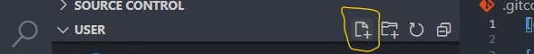
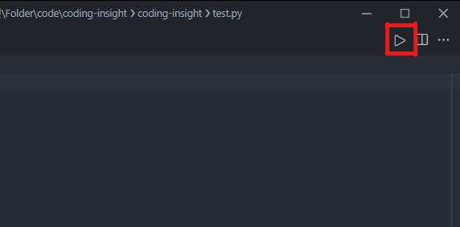

VSCode 설치하는 방법
1. VSCode 설치 페이지를 방문합니다.
2. 알맞은 컴퓨터 소프트웨어를 선택합니다.
+ 키보드에 창틀이 있으면 윈도우입니다(없다면 MAC).

3. 설치가 100%다 되면 그 박스를 클릭하세요.

4. 동의합니다를 선택하세요.

5. 다음(또는 Next) 버튼을 누르세요.

6. 설치 버튼을 누르세요.

7. 끝내기 버튼을 누르세요.

VSCode에서 파이썬 프로그래밍 준비
1. VSCode 왼쪽 바에 4 큐브 모양의 버튼이 있습니다. 클릭하세요. (CTRL+SHIFT+X)

3. Python이라고 친 후 기다리세요

4. 처음으로 나타나는 확장 도구을 설치하세요 (install 버튼 누르기)

5. Code Runner을 치고 가장 먼저 나오는 확장 도구을 설치하세요 (install)

VSCode 설치
Computer Science
Lab
(CSL) 3
VSCode에서 파이썬 프로그래밍하기
1. 파이썬 코드를 저장하기 위한 폴더가 필요합니다.
2. CTRL+SHIFT+E 또는 왼쪽 바에 있는 파일 버튼(버튼 중 맨 위)을 누르세요.

3. "Open Folder" 버튼을 누르고 코드를 저장할 파일을 선택하세요.

4. 파일 이름 옆에 보면 4개의 버튼이 있습니다. 가장 왼쪽 버튼을 클릭하세요.
5. 파이썬 파일 이름을 입력 후 '.py'로 끝내고 엔터를 누르세요.

6. 파일 안에 파이썬 코드를 입력합니다. print("Hello World")
7. 파이썬 파일 위쪽 코너에 보면 삼각형이 있습니다. 그 삼각형을 클릭하세요.

Hello World라고 출력될 것입니다.

.py?
위의 설명에서 항상 파이썬 파일을 만들때 "이름.py" 형태로 정해야한다고 했습니다.
그 이유는 컴퓨터에게 파일의 형태(종류)가 무엇이지 설명해야하기 때문입니다.
.py는 python의 약자로 컴퓨터에게 우리가 만든 파일이 파이썬 파일이라고 알려줍니다.